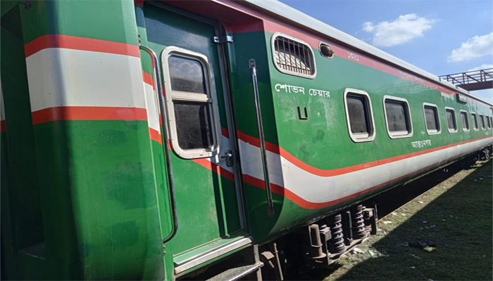

PM to inaugurate ‘Burimari Express’ on Dec 1

20 November 2023
The commercial operations of a new train service, the ‘Burimari Express’, on Dhaka-Burimari route will begin from December 1, railway authorities said on Monday.
Prime Minister Sheikh Hasina is scheduled to inaugurate the train service on that date.
The railway authorities decided to run the train service to ease the movement of tourists, businessmen and local people.
Already, five coaches of ‘Burimari Express’ reached Lalmonirhat on Sunday and Monday in two phases.
Jahangir Alam, assistant commercial officer of Lalmonirhat Railway, said already five coaches of the train reached Lalmonirhat Station and the rest will come soon.
The train will leave Lalmonirhat station from 9:10 am every day of the week, except Wednesday, he said.
Following the long-cherished demand of the residents of Lalmonirhat, Prime Minister Sheikh Hasina made a pledge to launch inter-city train services on October 19, 2011 while addressing a public rally held at Patgram Jashim Uddin Government College ground.
Local people said a train from Lalmonirhat, the ‘Lalmoni Express’ is operating in the district but it is not sufficient for the residents.
The residents of four upazilas of the district and those who travel to India through Burimari land port have been deprived for long from the train services. As a result, they have to depend on buses to communicate.